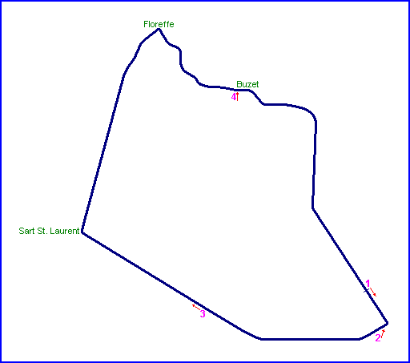
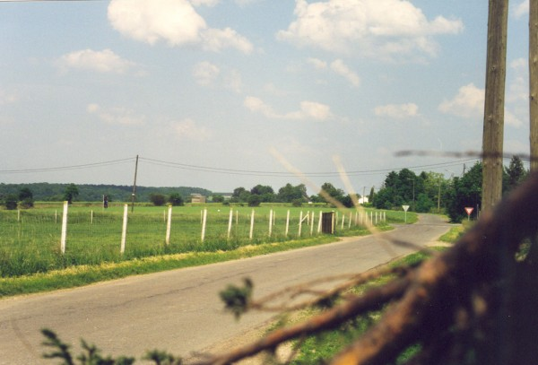
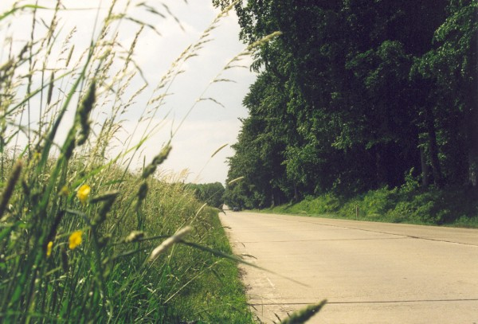
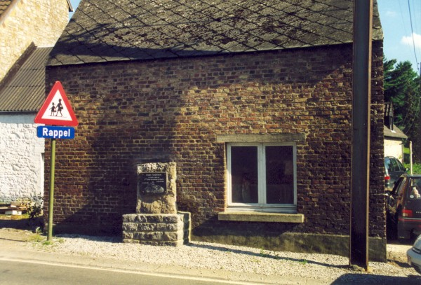
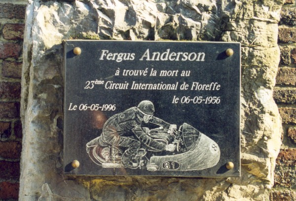

Floreffe, Belgium
Type: Street Circuit
Length: 8.451 Miles // 13.600 km
Used: 1925 to 1956
The Circuit International de Floreffe was a course of public roads that was located 20km to the Southwest of Namur. In 1936, the Belgian Motorcycle Grand Prix was held here, attracting 25,000 spectators. The circuit was used twenty-three times up to 1956. During the final meeting, Fergus Anderson was killed whilst competing in the 500cc race. Subsequently, the organisers and the governing body concluded that the circuit was no longer safe enough to allow racing to continue.
Numbers on the map indicate where the photos were taken. See
below or click on the map to view the photographs.

Return to racingcircuits.net's Photo
Archive Main Index
More photographs of Floreffe taken by Chris Hall

Looking back to the first turn.

Along the back straight, heading towards the village of Sart St. Laurent.

The Fergus Anderson memorial, situated in the village of Buzet.

A closeup of the plaque on the memorial.
©Johan Kuipers. Reproduced here with kind permission.